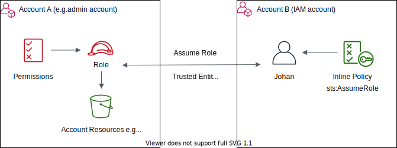

Chuan's Notes
Java
reduce in Java
The reduce function below will just work fine.
Integer sum = integers.reduce(0, (a, b) -> a+b);
However, when the arguments paassed to the BinaryOperator<T> accumulator are of different types, the compiler complains.
Example
Given a list of bank transactions.
public class Transaction {
double amount;
}
We want to calcuate the sum
List<Transaction> transactions; //...
double sum = transactions.stream()
.reduce(0.0, (result, t) -> result + t.getAmount(), Double::sum);
We have to provide a Double::sum combiner parameter for it to compile. Taking a closer look at the API:
<U> U reduce(U identity,
BiFunction<U,? super T,U> accumulator,
BinaryOperator<U> combiner)
The arguments of our accumulator above has different types which are of Transaction and Double. Therefore, we need the third combiner.
foldLeft in Java
In Java, you can use the Collector interface to perform reduction operations on a collection, which is similar to the foldLeft function in Scala.
static <T,R> Collector<T,R,R> of(Supplier<R> supplier,
BiConsumer<R,T> accumulator,
BinaryOperator<R> combiner,
Collector.Characteristics... characteristics)
Example
Given an example that one customer has multiple bank accounts:
public class BankAccount {
String customerName;
double balance;
// getter, setters..
}
We want to group a list of bank accounts by customer name and find out the balance across the customers' bank accoutns.
List<BankAccount> bankAccounts; //...
Map<String, Double> customers = bankAccounts.stream()
.collect(Collector.of(
(Supplier<HashMap<String, Double>>) HashMap::new,
(result, bankAccount) -> {
var sum = result.getOrDefault(bankAccount.getCustomerName(), 0.0);
result.put(b.getCustomerName(), sum + bankAccount.getBalance());
},
(a, b) -> a
));
This can also be addressed by using Java built-in groupingBy collector:
bankAccounts.stream()
.collect(Collectors.groupingBy(BankAccount::getCustomerName,
Collectors.summingDouble(BankAccount::getBalance)));
Docker
Dockerfile
The default working directory is root /.
WORKDIR is used to set working directory for any RUN, COPY, ADD, ENTRYPOINT, CMD instructions. And the directory is created if it does not exist.
ENTRYPOINT and CMD
ENTRYPOINT + CMD = default container command arguments
Thus
ENTRYPOINT ["/docker-entrypoint.sh"]
CMD ["java", "-jar", "app.jar"]
Is equivalent to
ENTRYPOINT ["/docker-entrypoint.sh", "java", "-jar", "app.jar"]
Override CMD and ENTRYPOINT
Specifying CMD in Dockerfile merely creates a default value and can be overriden by docker run
For the Dockerfile above, if we we invoke
docker run myservice java -DlogLevel=debug -jar app.jar
The container will be created with the following arguments:
["/docker-entrypoint.sh", "java", "-DlogLevel=debug" "-jar", "app.jar"]
To override the ENTRYPOINT declared in a Dockerfile, specify docker run --entrypoint flag.
docker run --entrypoint /docker-entrypoint2.sh myservice
To reset the container entrypoint, pass an empty string:
docker run --entrypoint="" myservice bash
Note this also overrides the CMD command with bash.
ARG
ARG GCLOUD_SDK_VERSION=286.0.0-alpine
FROM google/cloud-sdk:$GCLOUD_SDK_VERSION
The ARG defines a variable that users can pass at image build-time
docker build --build-arg GCLOUD_SDK_VERSION=290.0.0 .
Note the . dot is representing the context where the docker image is built. Typically for the COPY context/path/file /container/workdir
To build the image from another Dockerfile:
docker build --build-arg GCLOUD_SDK_VERSION=290.0.0 -f path/to/Dockefile .
Note: The ARG declared before a FROM is outside of a build stage. So it can't be used in any instruction after a FROM. To use the default value of an ARG, re-redeclare it without a value:
ARG GCLOUD_SDK_VERSION=286.0.0-alpine
FROM google/cloud-sdk:$GCLOUD_SDK_VERSION
ARG GCLOUD_SDK_VERSION
RUN echo $GCLOUD_SDK_VERSION > image_version
Reference: https://docs.docker.com/engine/reference/builder/#understand-how-arg-and-from-interact
Volume
VOLUME ["/data"]
The VOLUME creates a mount point to the volume on the host that holds the data persisted by the docker container during container runtime.
When running a docker container, the volume (directory) is created at the Docker root directory of the host machine - /var/lib/docker/volumes.
The name of volume is autogenerated and extreamly long, which are often referred to as "unnamed" or "anonymous".
However if the mount point is specified in the docker run -v or docker run --mount command, Docker will create and use the volume as specified on the host instead of the default volume specified in the Dockerfile.
Example
In the offical mysql Dockerfile:
VOLUME /var/lib/mysql
If we run the mysql container
docker run mysql:8
The mysql container instance will use the default mount point which is specified by the VOLUME instruction in the Dockerfile. And in my host,the volume is created at
/var/lib/docker/volumes/00b4488b017762870295a3894aa1d2ff2b3c6126e445273ef45e279f6ee8ddf9
If we run the mysql container
docker run -v /my/own/datadir:/var/lib/mysql mysql:8
This command mounts /my/own/datadir directory on my host as /var/lib/mysql inside the container instead.
Where to Store Data
There are several ways to store data used by applications that run in Docker containers. We encourage users of the mysql images to familiarize themselves with the options available, including:
-
Let Docker manage the storage of your database data by writing the database files to disk on the host system using its own internal volume managemen. This is the default and is easy and fairly transparent to the user. The downside is that the files may be hard to locate for tools and applications that run directly on the host system, i.e. outside containers.
-
Create a data directory on the host system (outside the container) and mount this to a directory visible from inside the container. This places the database files in a known location on the host system, and makes it easy for tools and applications on the host system to access the files. The downside is that the user needs to make sure that the directory exists, and that e.g. directory permissions and other security mechanisms on the host system are set up correctly.
The Docker documentation is a good starting point for understanding the different storage options and variations, and there are multiple blogs and forum postings that discuss and give advice in this area. We will simply show the basic procedure here for the latter option above:
-
Create a data directory on a suitable volume on your host system, e.g. /my/own/datadir.
-
Start your mysql container like this:
$ docker run --name some-mysql -v /my/own/datadir:/var/lib/mysql -e MYSQL_ROOT_PASSWORD=my-secret-pw -d mysql:tag
The -v /my/own/datadir:/var/lib/mysql part of the command mounts the /my/own/datadir directory from the underlying host system as /var/lib/mysql inside the container, where MySQL by default will write its data files.
Reference:
network
You don't need docker-compose
docker-compose by default creates a bridge docker network named <directory>_default for connecting docker containers. To specify different network name:
version: "3.3"
services:
web:
image: registry/image_name:version
container_name: web
networks:
- skywalker
postgres:
image: registry/image_name:version
container_name: postgres
networks:
- skywalker
networks:
skywalker:
driver: bridge
This will create a bridge docker network named skywalker_docker.
The reason why the containers are interconnected is that they share the same docker bridged network. The docker-compose yaml scripts can be easily rewritten using docker network.
docker network create -d bridge skywalker
docker run -d --rm --network skywalker --name web registry/image_name:version
docker run -d --rm --network skywalker --name postgres registry/image_name:version
And the web container can communicate the postgres container through postgres:5432.
Note: The container_name is the host inside the docker network.
To inspect the network:
docker network inspect skywalker
Other useful commands can be found at https://docs.docker.com/engine/reference/commandline/network/.
docker run
docker run
docker run - w /usr/src/app image /bin/bash -c "mvn clean package;jar -jar app.jar"
The -w lets the command being executed inside the given directory, here /usr/src/app. If the path does not exit it is created inside the container.
AWS
EBS

Reference
https://docs.aws.amazon.com/AWSEC2/latest/UserGuide/Storage.html
IAM
An AWS account has two types of users, root user and IAM user. And they are belong to the same AWS account. When we login onto AWS management console, both root user and IAM user share the same account ID.
IAM user policies
IAM user policies are identity-based policies that control an IAM user's access to account resources, such as a S3 bucket.
Actionelement refers to the kind of action requested (list, create, etc.);Resourceelement refers to the particular AWS account resource that’s the target of the policy;Effectelement refers to the way IAM should react to a request.
The user policy example below allows an IAM user to upload and read objects in awsexamplebucket S3 bucket.
{
"Version":"2012-10-17",
"Statement": [
{
"Effect":"Allow",
"Action":[
"s3:PutObject",
"s3:GetObject"
],
"Resource":"arn:aws:s3:::awsexamplebucket/*"
}
]
}
Read more at https://docs.aws.amazon.com/AmazonS3/latest/userguide/user-policies.htm
Bucket policies
Bucket policies are resource-based policies.
If an AWS account that owns a bucket wants to grant permission to users in its account, it can use either a bucket policy or a user policy.
However, if we want manage cross-account access to a bucket, then we have to use bucket policies.
For instance, we can use the bucket policy below to grant permissions to other AWS accounts, AccountB to upload objects to the bucket awsexamplebucket that we own.
{
"Version":"2012-10-17",
"Statement": [
{
"Sid":"AddCannedAcl",
"Effect":"Allow",
"Principal": {"AWS": "arn:aws:iam::AccountB-ID:user/Dave"},
"Action": ["s3:PutObject","s3:PutObjectAcl"],
"Resource": "arn:aws:s3:::awsexamplebucket/*",
"Condition": {
"StringEquals": {
"s3:x-amz-acl": "bucket-owner-full-control"
}
}
}
]
}
The Condition in the example makes sure that the owner of the bucket, AccountA has full control over the uploaded objects. Read more at https://docs.aws.amazon.com/AmazonS3/latest/userguide/amazon-s3-policy-keys.html
After we add this bucket policy, user Dave must include the required ACL as part of the request:
aws s3 cp example.jpg s3://awsexamplebucket --acl bucket-owner-full-control
Read more about s3-require-object-ownership
This example is about cross-account permission. However, if Dave (who is getting the permission) belongs to the AWS account that owns the bucket, this conditional permission is not necessary. This is because the parent account to which Dave belongs owns objects that the user uploads.
Read more about bucket policies at https://docs.aws.amazon.com/AmazonS3/latest/userguide/bucket-policies.html
Object ACL and Bucket ACL
Read more at https://docs.aws.amazon.com/AmazonS3/latest/userguide/access-policy-alternatives-guidelines.html
IAM role
IAM roles enables cross user or cross account temporary access for account resources.

An IAM role is not assigned to a user (by an admin). Rather, the IAM user assumes the role created by the admin.
Therefore, the admin needs to ensure that the user (trusted entity) has the permission to perform the sts:AssumeRole operation (action).
To provide such a permission, the admin needs to create an IAM Policy and attach it to the user or group.
{
"Version": "2012-10-17",
"Statement": [
{
"Sid": "VisualEditor0",
"Effect": "Allow",
"Action": "sts:AssumeRole",
"Resource": "arn:aws:iam::<admin_account-id>:role/*" // any roles in this account
}
]
}
With this IAM policy attached to the user, the user is now able to perform the sts:AssumeRole operationa. However, this does not mean that the user will get the role.
It is like
You are now allowed to ask questions, but you may or may not get an answer".
Whether you will get the answer or not is determined by the Trusted entity which is covered below.
Create the role
Next, we can create the IAM role.
An IAM Role consists of the following core elements:
-
Permission specifies what account resources can be accessed and what actions can be taken, which is exactly what the IAM Policy does. For instance: adding
AmazonS3FullAccessto the role permissions will allow the user who has successfully assumed this role to have full access toS3. -
Trusted Entity specifies what entitiy can assume this role (Don't be confused with the IAM Policy
sts:AssumeRoleaction above).
{
"Version": "2012-10-17",
"Statement": [
{
"Effect": "Allow",
"Principal": {
"AWS": "arn:aws:iam::<user_account-id>:root" // the user who performs the AssumeRole action
},
"Action": "sts:AssumeRole",
"Condition": {}
}
]
}
Assume the role
Before we assume the role, let's first verify that we don't have access to S3.
aws s3 ls
Next, let's assume the role s3fullaccess-user1 created above.
One way is to add a profile to ~/.aws/config, as shown below.
For simplicity, we use the role name s3fullaccess-user1 as the [profile_name].
[s3fullaccess-user1]
role_arn=arn:aws:iam::<admin_account-id>:role/s3fullaccess-user1
source_profile=account1
Now if we invoke the command with the s3fullaccess-user1 profile, we will be able to list the buckets in S3.
aws s3 ls --profile s3fullaccess-user1
Read more about the how to config awscli to use an IAM role here.
Anothe way to consume the IAM role is to use awscli:
aws sts assume-role --role-arn "arn:aws:iam::<admin_account-id>:role/s3fullaccess-user1" --role-session-name AWSCLI-Session
A full example for assuming IAM role using awscli is here
VPC

Reference
OS
Volume
Files are stored on random-access storage devices, including hard disks, solid-state disks.
Files can only be stored on a storage device with a file system created. Any entity containing a file system is generally known as a volume.
The volume may be partition or a whole device. Each volume that contains a file system must also contain information about the files in the system. This information is kept in entries in a device directory that records informtation -- such as name, location, size, and type -- for all files on that volume.
Volume Mounting
Just as a file must be opened before it is used, a file system (volume) must be mounted beforeit can be availble on the operating system.
The mount procedure is straightforward. The operating system is given the name of the device and the mount point -- where the file system is to be attached.
Example (AWS EBS volume)
When we launch an AWS EC2 instance, we can add additional storage, by attaching additional EBS volumes.
| Volume Type | Device | Snapshot | Size(GiB) | Volume Type |
|---|---|---|---|---|
| Root | /dev/xvda | snap-0ee8a4a337cf9d029 | 128 | SSD |
| EBS | /dev/xvdb | 8 | SSD |
The EBS storage attached to the EC2 instance is not ready to be used since it doesn't contain a file system. We therefore need to create a file system on this storage device and mount it onto the EC2 instance OS.
We could ssh into the launched EC2 instance and issue the commands below, in order to store files into this EBS volume.
$ lsblk
NAME MAJ:MIN RM SIZE RO TYPE MOUNTPOINT
xvda 202:0 0 128G 0 disk
|_xvda1 202:1 0 128G 0 part /
xvdb 202:16 0 8G 0 disk
$ sudo su
$ file -s /dev/xvdb
/dev/xcdb: data
$ mkfs -t xfs /dev/xvdb
meta-data=/dev/xvdb isize=512 agcount=4 agsize=524288 blks
.....
$ file -s /dev/xvdb
/dev/xvdb: SGI XFS filesystem data (blks 4096, inosz 512, v2 dirs)
$ makedir /data
$ mount /dev/xvdb /data
$ cd /data
$ touch test.txt
Example (Install Void Linux)
When installing Void Linux, the essential parts are to partition the computer disk and create file systems.
Suppose the device name for the computer disk is /dev/sda and we need to partition the disk and create the file system for each partition as:
| Device | Size | Type | Mount point | File system type |
|---|---|---|---|---|
| /dev/sda1 | 100M | BIOS boot | /boot/efi | vfat FAT32 |
| /dev/sda2 | 298G | Linux filesystem | / | btrfs Oracle's Btrfs |
Install Void Linux
Download & Flash
First download a live image. Download void-live-x86_64-20210218-gnome.iso if you want to use the GNOME desktop.
Next, flash the downloaded image to a USB drive. You can use etcher.
Bios Settings
I am installing void linux on a Lenove Thinkpad. Press F12 to enter Bios setup.
In order to boot from a USB drive, we need to disable Secure Boot in the Security settings.
Next, in the Bios Startup settings, make sure we have UEFI/Legacy Boot set to UEFI only
Install
Before starting installation, make sure we are using UEFI booting by checking:
ls /sys/firware/efi
# /sys/firware/efi exists means system uses UEFI
Type sudo void-installer in terminal, we will get into void linux installation wizard.
The keymap for swedish keyboard is se-latin1.
Bootloader
Select the disk, for example /dev/sda to install the boot loader and choose graphical terminal for GRUB menu.
Partition
For EFI systems GPT is mandatory and a FAT32 partition with at least 100MB must be created with the TOGGLE boot, this will be used as EFI System Partition. This partition must be mounted as /boot/efi.
At least 1 partition is required for the root file system /.
Therefore, we need at least 2 partitions for our computer disk (device name might be /dev/sda):
| Device | Size | Type |
|---|---|---|
| /dev/sda1 | 100M | BIOS boot |
| /dev/sda2 | 298G | Linux filesystem |
File system
We need to create and mount the file systems for each of the 2 partitions:
| Device | Mount point | File system type |
|---|---|---|
| /dev/sda1 | /boot/efi | vfat FAT32 |
| /dev/sda2 | / | btrfs Oracle's Btrfs |
Post Installation
Now we have void linux installed. We need to perform a system update for the first time:
sudo xbps-install -u xbps
sudo xbps-install -Su
Reference
https://docs.voidlinux.org/installation/live-images/guide.html